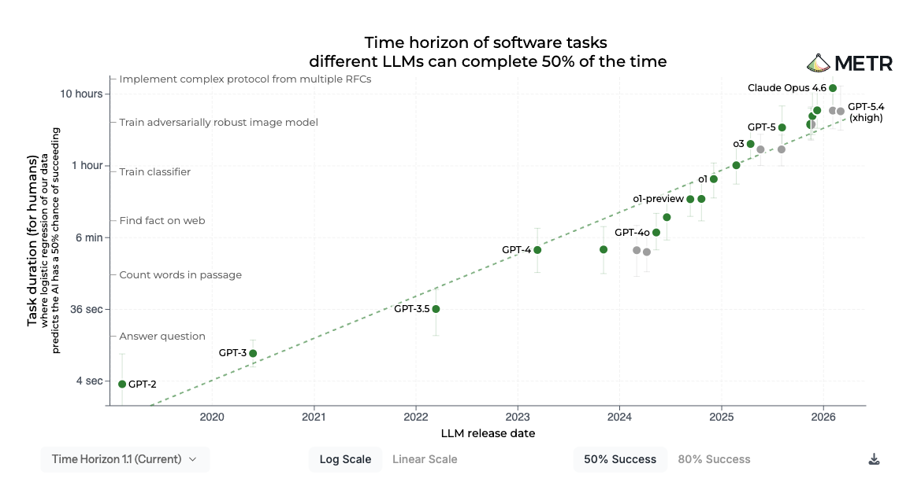

METR measures how long a frontier model can work autonomously before a human has to step in. Claude Opus 4.6 is at twelve hours. In practice, developers babysit in 45-second increments, because the risk of a single wrong action is still too high.
